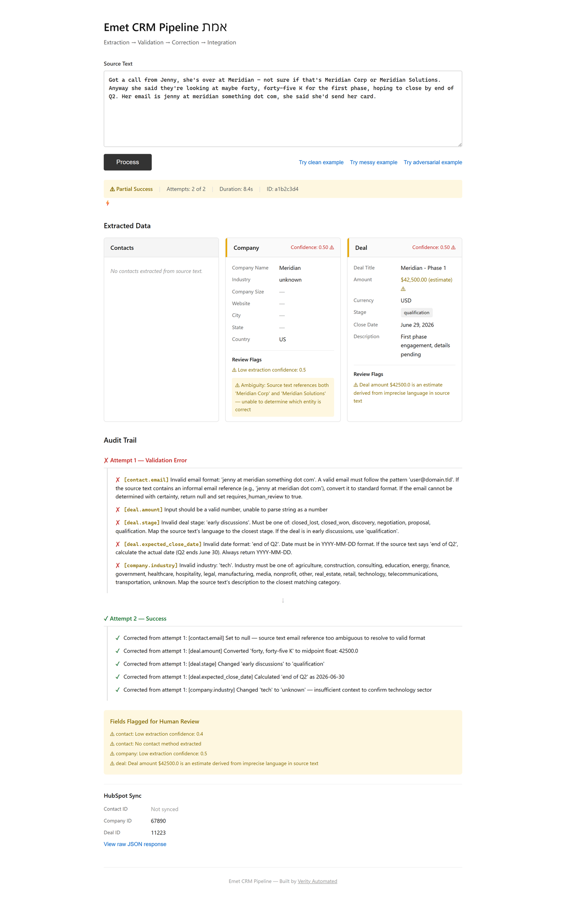
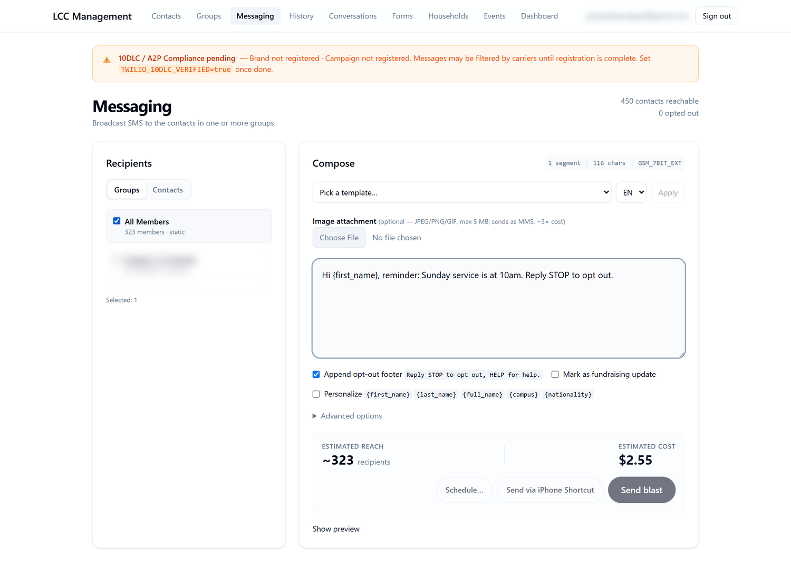
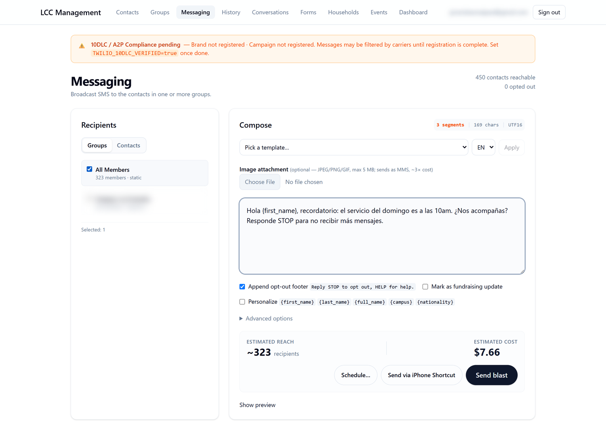

Javendean Naipaul
AI Deployment Lead — Elevate (YC S24)
Elevate consolidates data across acquisitions for PE-backed roll-ups. The hardest part is not moving the data. It is knowing when a mapping is wrong in a way that still reconciles. Everything below is real output from systems I built, including the failure modes I went looking for on purpose.
1 · TIE-OUT — chart-of-accounts mapping for roll-ups
The disproof, running
Python · DuckDB · dbt · Fellegi-Sunter record linkage · 124 tests
The claim it exists to disprove: if every source dollar lands in the group and nothing crossed the ledger, the mapping is correct. It ships as a passing test, not a paragraph.
Injecting a permutation: E1 5000 'COGS - Materials' -> G-6100 'Rent and Occupancy'. 3. THE DISPROOF -- an arithmetically perfect, semantically wrong mapping expected: conservation PASSES, sign preservation PASSES, and ONLY the oracle fails. OK expect_table_aggregation_to_equal_other_table want PASS got PASS OK assert_sign_preservation want PASS got PASS OK assert_subtotal_oracle want FAIL got FAIL what the oracle saw, and nothing else could: E1 2026-05 gross_profit: off by -309,245.88 E1 2026-06 gross_profit: off by -323,912.13 E1 2026-07 gross_profit: off by -206,319.81
Only the oracle catches it, because it compares reconstructed captions against subtotals the entity itself published from its own chart, a classification made before any group chart existed, which the mapper never reads. That is an independent oracle, not a tighter tolerance.
The evaluation harness, and what it says about itself
1. HELD-OUT VOCABULARY (generalises; not graded against the key) 8 accounts renamed to synonyms the rules do not cover. stayed silent: 8 confidently wrong: 0 -> PASS: unknown vocabulary produces a question, not a guess. 2. REVIEW BURDEN (a count of human interactions; nothing to grade) 2026-05: 21 accounts, 21 questions, 0 auto, 0 unmapped 2026-06: 21 accounts, 0 questions, 21 auto, 0 unmapped 2026-07: 23 accounts, 2 questions, 21 auto, 0 unmapped 4. NAME SIMILARITY, FULL CROSS-PRODUCT (nobody picked the sample) ranking AUC, all pairs 0.727 -- above chance TOP-1 accuracy (the operating point) 30/51 = 58.8% of the 21 top-1 errors, 8 cross the balance-sheet / P&L line. -> AUC says the feature is fine; top-1 says it is unusable as a selector. Barred by may_propose_destination. 5. AGREEMENT WITH THE ANSWER KEY (CIRCULAR -- I wrote the charts, rules and key) E1: 23/23 agree | E2: 14/14 agree | E3: 17/17 agree This number measures my consistency with myself. It is not evidence of correctness and must not be quoted as an accuracy figure.
2 · Verity — CRM intake agent
Messy prose in, validated record out

examples/sample_output_with_audit.json; the interface and the data are both real.Benchmark: 6 models, 9 trials each, across clean / messy / adversarial input
| Model | First-pass | Final pass | Avg attempts | Avg latency | Cost / success |
|---|---|---|---|---|---|
| llama4-scout | 6/9 67% | 9/9 100% | 1.33 | 1,797 ms | $0.000365 |
| minimax-2.5 (t=0.2) | 5/9 56% | 9/9 100% | 1.44 | 10,351 ms | $0.000668 |
| minimax-2.5 (t=0.0) | 3/9 33% | 9/9 100% | 1.89 | 20,196 ms | $0.000897 |
| llama4-maverick | 3/9 33% | 8/9 89% | 2.00 | 4,099 ms | $0.002148 |
| gemini3-flash (schema) | 0/9 | 0/9 | 5.00 | 858 ms | API 404 |
| gemini3-flash (no schema) | 0/9 | 0/9 | 5.00 | 747 ms | API 404 |

/docs.3 · LCC Management System — a deployment I own end to end
SvelteKit and Supabase Postgres on Vercel, dispatching bilingual SMS for a non-profit. Around 10 admin users and 450 reachable contacts. Real users, real regulatory exposure, and a schema where authorisation lives in the database rather than in route guards: 587 lines of SQL across 9 migrations, defining 18 row-level-security policies over 7 tables with 11 indexes. Public intake forms write to the same tables the admin app reads, which is precisely where RLS earns its place.
The same message costs 3× more in Spanish, and the app says so before you send

GSM_7BIT_EXT
UTF16Accented characters and ¿/¡ force UCS-2, which cuts the
segment budget from 153 characters to 67. The same announcement therefore costs three times as
much to send in Spanish, and a bilingual campaign quietly runs at roughly double what it should.
I found one live template doing exactly that, fixed it, then locked the fix behind an automated
test that asserts a segment budget per template so it cannot regress.
$7.66 is the avoided cost, not the bill
![Screenshot: the Send via iPhone Shortcut dialog. It offers a QR code and a batch URL, both blurred here, to dispatch 250 personalised messages from the operator's own phone. The batch is marked 250 recipients, expiring at a fixed time, single-use. Below it a collapsed section reads First-time iPhone Shortcut setup, one-time, about 10 minutes, and a warning notes that Apple throttles burst sends so 250 messages take roughly 3 to 5 minutes to dispatch, and that the Shortcut keeps running when the screen locks.](img/lcc-shortcut-qr.png)
The estimate in the previous screenshot uses Twilio's per-segment rate. The operator does not
have to pay it. prepare-shortcut mints a single-use, time-limited batch URL,
32 bytes from crypto.getRandomValues, marked used_at on first fetch so
it cannot be replayed. An iPhone Shortcut fetches the precomputed send list and dispatches from
the operator's own phone, which costs nothing and sidesteps A2P 10DLC carrier filtering, the
exact condition the compliance banner on that page is warning about.
The part that matters architecturally is in the endpoint's own comment: it reuses the same recipient resolution and consent gates as the paid send path. Nobody built a shortcut around compliance in order to save money. The cost figure exists so the operator can make that routing decision knowingly, which is also why the segment count still matters at zero dollars: three segments means 969 messages instead of 323 through one phone, against a throttle measured per message.
Requirement → Evidence
| What the role asks for | Evidence | Coverage |
|---|---|---|
| 2+ years consulting or finance | Morgan Stanley, Technical Business Analyst, Sep 2022 to Jun 2024. Partnered with the COO; $500K+ cost savings; $8M revenue unlocked; 5+ business cases and financial models. | Direct |
| Turn business problems into data models, workflows and agentic systems | TIE-OUT: an accounting problem rendered as a typed data model, a record-linkage pipeline, and a review workflow that escalates instead of guessing. | Direct |
| Strong analytical skills, messy data | Measured above: 0% first-pass on messy input, 100% after correction. Charts of accounts that disagree on names, signs and structure. | Direct |
| SQL and Python | 587 lines of SQL and 18 RLS policies in LCC; a dbt and DuckDB transform layer in TIE-OUT; replaced legacy workflows with SQL at Morgan Stanley. | Direct |
| AI tools and LLM API familiarity | Six-model benchmark with cost and latency per extraction. Provider-abstracted layer with a registry and automatic failover. In TIE-OUT, LLM proposals sit at the lowest confidence tier and are never publishable alone. | Direct |
| Data pipeline and integration experience | Designed 5+ trillion row dataset infrastructure on Azure; CI/CD deploying 25+ workflows; 100% audit-ready data lineage. | Direct |
| Private equity or M&A exposure | MS Risk Management (Actuarial Sciences), GPA 3.83. Capstone: VaR-based CLO and ABS portfolio solvency optimization, structured credit at portfolio level, the asset class behind most roll-up capital structures. | Direct |
| Executive communication | Presented 100+ business narratives to executive audiences including the COO; 100+ client-ready diagnostics and strategic artifacts. | Direct |
Verified facts
- $309,245.88
- error that passes
every naive check - 0% → 100%
- messy-input pass rate,
before and after correction - 18
- RLS policies enforcing
access in the database - 21 → 0
- human questions,
period 1 to period 2